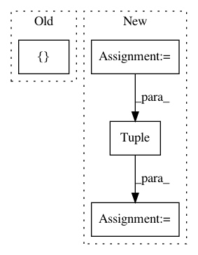

f506c8b19ab3a7634ac56f63298dade6d40d2d1d,tests/python/relay/test_annotated_regions.py,,test_region_set_creator_merged,#,78
Before Change
check_region(
region_set,
[cb_3, cb_4],
[cb_3, cb_4, O_3, ce_4],
[ce_4],
)
After Change
cb_3 = compiler_begin(ce_3, "test_target")
cb_4 = compiler_begin(ce_d, "test_target")
O_3 = relay.add(cb_3, cb_4)
O_4 = relay.add(cb_3, cb_4)
O_5 = relay.Tuple([O_3, O_4])
ce_4 = compiler_end(O_5, "test_target")
merged = relay.Function([data], ce_4)
region_set = relay.analysis.AnnotatedRegionSet(merged,
In pattern: SUPERPATTERN
Frequency: 3
Non-data size: 4
Instances
Project Name: apache/incubator-tvm
Commit Name: f506c8b19ab3a7634ac56f63298dade6d40d2d1d
Time: 2020-04-10
Author: comaniac0422@gmail.com
File Name: tests/python/relay/test_annotated_regions.py
Class Name:
Method Name: test_region_set_creator_merged
Project Name: flow-project/flow
Commit Name: ba54a88068c07af00b4cb26362788ee51af319be
Time: 2017-10-12
Author: akreidieh@gmail.com
File Name: flow/envs/lane_changing.py
Class Name: SimpleLaneChangingAccelerationEnvironment
Method Name: action_space
Project Name: OpenMined/PySyft
Commit Name: 713eda271c55358f577e6f682036049448340975
Time: 2021-03-13
Author: dashnabanita@gmail.com
File Name: tests/syft/lib/python/slice/slice_id_test.py
Class Name:
Method Name: